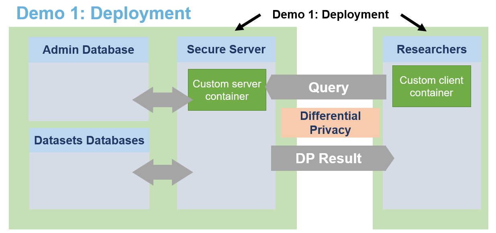
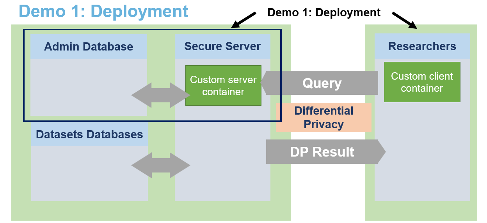
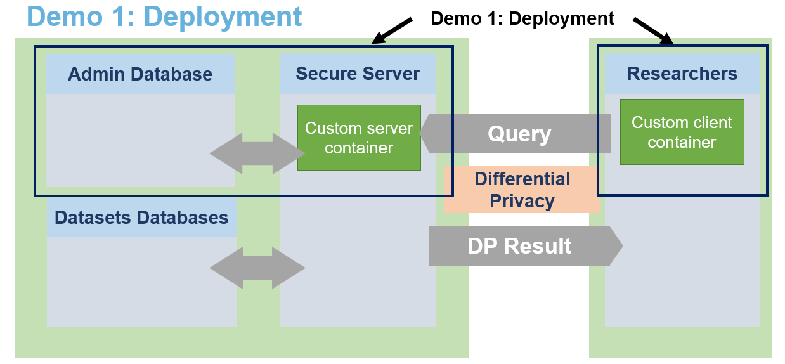

Demo - Kubernetes Service Deployment
Building the container images
Use docker login to setup your credentials
[1]:
from IPython.display import Image
Image(filename="images/image_demo_deployment_containers.png", width=800)
[1]:

Server
[ ]:
!cd .. && docker build --target lomas_server -t <your_registry>/lomas_server:latest .
!cd .. && docker push <your_registry>/lomas_server:latest
Client
[ ]:
!cd ../../client/ && docker build --target lomas_client -t <your_registry>/lomas_client:latest .
!cd ../../client/ && docker push <your_registry>/lomas_client:latest
Starting the service
[2]:
from IPython.display import Image
Image(filename="images/image_demo_deployment_service.png", width=800)
[2]:

[3]:
import os
os.chdir('../deploy/helm/charts/lomas_server')
Update values.yaml file
Download Helm dependency for the MongoDB chart
[2]:
!helm dependency update
Saving 1 charts
Downloading mongodb from repo oci://registry-1.docker.io/bitnamicharts
Pulled: registry-1.docker.io/bitnamicharts/mongodb:13.18.1
Digest: sha256:f3b2a691537260044746bc4a8898e9ae68e8c29864639737b6da920f99aebe97
Deleting outdated charts
Install server chart
[3]:
!helm install -f values.yaml lomas-service .
W1212 08:38:59.187407 178308 warnings.go:70] annotation "kubernetes.io/ingress.class" is deprecated, please use 'spec.ingressClassName' instead
NAME: lomas-service
LAST DEPLOYED: Tue Dec 12 08:38:56 2023
NAMESPACE: user-aymond
STATUS: deployed
REVISION: 1
TEST SUITE: None
NOTES:
1. Get the application URL by running these commands:
https://lomas-server.lab.sspcloud.fr/
Check deployment with kubectl get all and by querying <server_url>/state
Starting the client session
[4]:
os.chdir("../../../../notebooks/")
from IPython.display import Image
Image(filename="images/image_demo_deployment_client.png", width=800)
[4]:

[5]:
os.chdir("../../client/deploy/helm/charts/lomas_client")
Update values.yaml file
Install the client chart
[7]:
!helm install -f values.yaml lomas-client .
W1212 10:06:30.269176 189525 warnings.go:70] annotation "kubernetes.io/ingress.class" is deprecated, please use 'spec.ingressClassName' instead
NAME: lomas-client
LAST DEPLOYED: Tue Dec 12 10:06:28 2023
NAMESPACE: user-aymond
STATUS: deployed
REVISION: 1
TEST SUITE: None
NOTES:
1. Get the application URL by running these commands:
https://lomas-client.lab.sspcloud.fr/
Access the client environment through the url and use the password defined in the values file.
Stopping the service
[ ]:
!helm uninstall lomas-service
!helm uninstall lomas-client